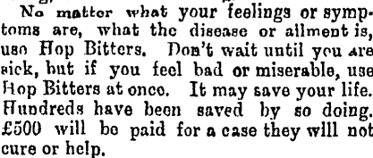

Thursday, September the 3rd, 2009
back to: title, date or indexes
It is encouraging to note that a universal panacea for all ills* was discovered as long ago as 1883. Following a morally uplifing tale of gruel, the North Otago Times (at Papers Past) carries a recommendation for hop bitters.

And if they don't work, keep reading, and discover the benefits of German Syrup.
*NOTE : If you're going to practise tautology, do it properly!